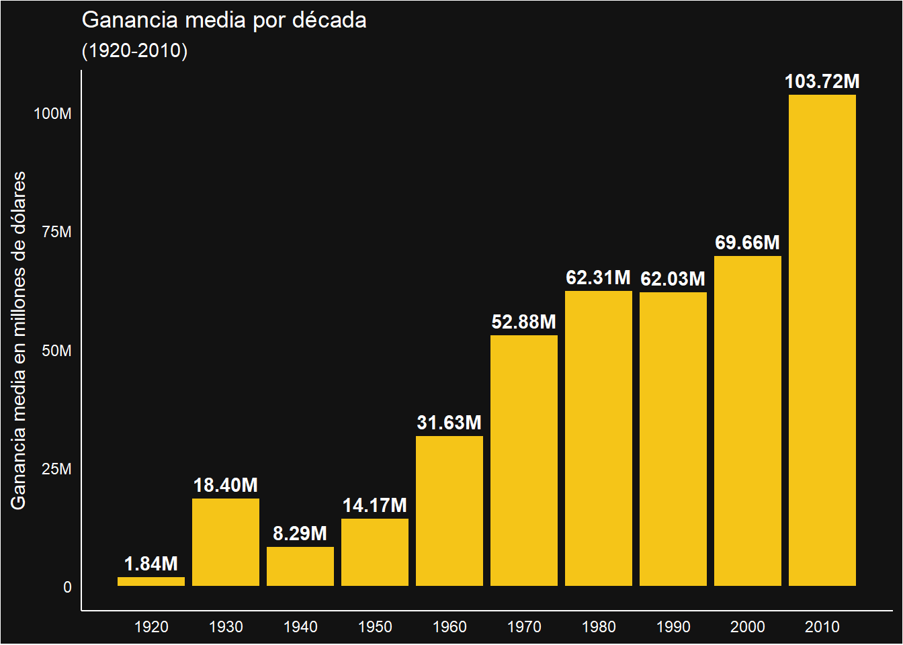
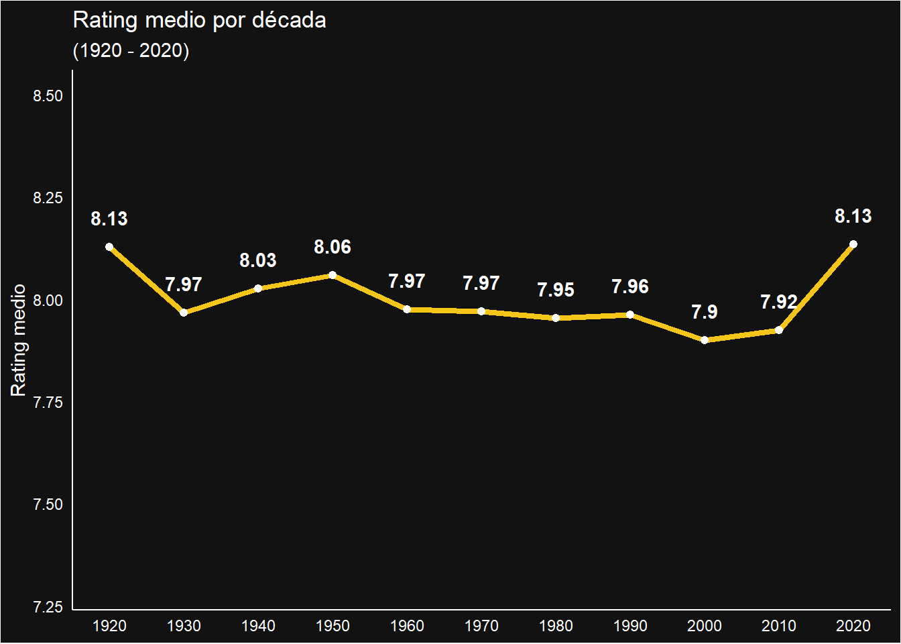

Análisis exploratorio de las mejores 1000 películas según IMBD
Introducción
En tiempos de pandemia, debido a que todo el mundo se encontraba bajo confinamiento para prevenir contagios, muchas empresas sufrieron pérdidas masivas debido a la imposibilidad de trabajar con normalidad. Sin embargo existieron rubros que lograron generar ganancias récord, sobre todo aquellas que se convirtieron en las principales fuentes de entretenimiento durante el covid-19 como lo fueron los servicios de streaming. Según datos de Motion Picture Association en el año 2020 lograron superar un billón de suscripciones llegando a alcanzar $68.8 billones de dólares en ganancias globales, un aumento del 23% con respecto al año 2019. [Ver artículo]
A raíz de lo anterior, fueron que páginas como Internet Movie Database (IMBD) servían como principal fuente de búsqueda de películas o series para pasar nuestro aburrimiento encerrados en la casa, pero primero que todo ¿Qué es IMBD?
En este proyecto se analizarán las mejores mil películas según IMBD, donde algunas variables de interés serán el género, ganancias, año de lanzamiento, número de votos, calificación, entre otros.
El análisis tiene como enfoque resolver principalmente las siguientes preguntas:
¿Cómo han ido variando las ganancias a través de las décadas?
¿Cómo a ido variando la duración a través de las décadas?
¿Son las películas más antiguas las que tienen mejor calificación?
¿Qué géneros son los más populares a través de las décadas?
Las preguntas anteriores tienen el objetivo principal de darnos a entender de mejor forma cómo han ido variando ciertos elementos de las películas a través de las décadas, ver si existe algún patrón que se mantiene durante el tiempo y obtener interesantes conclusiones a través de las décadas.
Se comenzará con una descripción de las variables a utilizar en el proyecto para ya luego ir resolviendo las preguntas establecidas a través del análisis de gráficos y tablas, y así presentar los resultados obtenidos. Se finalizará con una conclusión destacando los principales patrones encontrados.
La base de datos de IMBD
IMBD corresponde a una página web principalmente de películas y series, donde la principal característica de es poder ver la calificación de estas, donde tanto los críticos profesionales como cualquier persona le pueden dar una nota del 1 al 10 para luego obtener el promedio de las calificaciones. También existen otros apartados como poder ver la trama, el elenco, reseñas de los usuarios y críticos, el equipo de producción, entre otros.
La base de datos a utilizar corresponde a las mejores mil películas de IMBD, la cual fue obtenida del sitio web Kaggle [Base de datos] e incluye datos hasta el 2020. Antes de comenzar con el análisis exploratorio es importante hacer un preprocesamiento a la base de datos, para trabajar con las variables de nuestro interés y ver si existen datos extraños, NAs, hacer cambios a la base para nuestra comodidad, etc.
Preprocesamiento
Lo primero que vamos a hacer es eliminar todas las variables que no son de nuestro interés, en nuestro caso serían: Poster_Link, Certificate, Overview y Metascore . Luego la variable Runtime es de tipo caracter ya que en la base de datos viene de la forma “89 min”, “100 min”,“120 min”, etc, por lo que eliminamos la palabra “min” para ya luego transformar la variable a numérica. Lo siguiente es cambiar el nombre de las variables del inglés al español para facilitar la comprensión de las variables.
Existe también una película que esta etiquetada como “PG” en su año de lanzamiento, por lo que buscamos el año de lanzamiento en Google de la película y reemplazamos “PG” por 1995. Por último para la variable Genero tenemos películas que se agrupan de la forma “Action, Drama, Crime” o “Drama, Action”. Para estos casos, donde existen mas de dos géneros que identifican a una película, tomamos el primer género del lado izquierdo es decir en el caso de “Action, Drama, Crime” tomamos solo “Action” y en el caso de “Drama, Action” tomamos solo “Drama”.
Las variables a utilizar en el reporte son las siguientes:
| Variable | Tipo | Descripción |
|---|---|---|
Nombre_pelicula |
caracter | Nombre de la película |
Año_lanzamiento |
numérica | Año de lanzamiento de la película |
Duracion |
numérica | Duración en minutos de la película |
Genero |
caracter | Género de la película |
IMBD_Rating |
numérica | Calificación o “rating” de la película recibida en el sitio web IMBD (nota del 1 al 10) |
Director |
caracter | Director de la película |
Actor_1 |
caracter | Actor principal de la película |
Numero_de_votos |
numérica | Número de personas que calificaron la película |
Ganancias |
numérica | Dinero recaudado por la película en dólares sin ajustar por inflación |
Análisis Exploratorio
Análisis a través de las décadas
Ya que contamos con los años de lanzamiento de las películas, un buen punto de partida para este análisis exploratorio es ver cómo han variado las ganancias, la duración y el rating promedio a través del tiempo agrupando los años en décadas. Empezaremos con las ganancias, que se muestra en la Figura 1. Hay que tener en consideración que para este gráfico en específico se toma en cuenta solo hasta la década del 2010 (es decir de 2010 a 2019) ya que para las películas del año 2020 no se registraron sus ganancias.
Tal y como vemos en la Figura 1, notamos que en general a medida que han pasado las décadas las ganancias han aumentado considerablemente, especialmente si notamos que de la década del 1920 al 2010 las ganancias han aumentado casi 100 veces mas. También podemos ver que de 1920 a 1930 existe un gran salto en las ganancias, para luego en 1940 decaer nuevamente. Cabe mencionar que las ganancias de estos años pueden estar mal representadas ya que estamos hablando de películas de hace bastante tiempo por lo cual no se tienen sus ganancias exactas o simplemente no se registraron en la base de datos. Otra posibilidad es que durante estas décadas ocurrieron dos guerras mundiales lo cual pudo haber afectado a la producción de películas y las ganancias obtenidas.
*Los siguientes gráficos están en progreso de ser comentados:

De la Figura 2

Como vemos en la Figura 3

| Géneros más repetidos por década | ||
| (1920 - 2020) | ||
| Década | Género | Conteo |
|---|---|---|
| 1920 | Drama | 3 |
| 1930 | Comedy | 9 |
| 1940 | Drama | 14 |
| 1950 | Drama | 23 |
| 1960 | Drama | 27 |
| 1970 | Drama | 22 |
| 1980 | Action | 19 |
| 1980 | Comedy | 19 |
| 1990 | Drama | 43 |
| 2000 | Drama | 67 |
| 2010 | Drama | 64 |
| 2020 | Comedy1 | 2 |
| 2020 | Drama1 | 2 |
| 1 Notar que la poca cantidad de géneros contados en 2020 es debido a la pandemia que afectó a la producción de películas | ||
| Top 10 películas según sus ganancias | |||||
| Película | Año lanzamiento | Género | Rating | Número de votos | Ganancias |
|---|---|---|---|---|---|
| Star Wars: Episode VII - The Force Awakens | 2015 | Action | 7.9 | 860823 | 936662225 |
| Avengers: Endgame | 2019 | Action | 8.4 | 809955 | 858373000 |
| Avatar | 2009 | Action | 7.8 | 1118998 | 760507625 |
| Avengers: Infinity War | 2018 | Action | 8.4 | 834477 | 678815482 |
| Titanic | 1997 | Drama | 7.8 | 1046089 | 659325379 |
| The Avengers | 2012 | Action | 8.0 | 1260806 | 623279547 |
| Incredibles 2 | 2018 | Animation | 7.6 | 250057 | 608581744 |
| The Dark Knight | 2008 | Action | 9.0 | 2303232 | 534858444 |
| Rogue One | 2016 | Action | 7.8 | 556608 | 532177324 |
| The Dark Knight Rises | 2012 | Action | 8.4 | 1516346 | 448139099 |
| Ganancias y rating medio según su género | ||
| Género | Ganancias | Rating |
|---|---|---|
| Action | 141963092 | 7.95 |
| Adventure | 86454990 | 7.94 |
| Animation | 127967528 | 7.93 |
| Biography | 60128732 | 7.94 |
| Comedy | 32537590 | 7.90 |
| Crime | 34191231 | 8.02 |
| Drama | 38677281 | 7.96 |
| Family | 219555277 | 7.80 |
| Fantasy | 1 NaN | 8.00 |
| Film-Noir | 1278626 | 7.97 |
| Horror | 73585773 | 7.91 |
| Mystery | 30439534 | 7.97 |
| Thriller | 17550741 | 7.80 |
| Western | 14555377 | 8.35 |
| 1 Los datos faltantes corresponden a dos películas de los años 1920 y 1922 | ||
| Ganancias,rating y número de votos medio según su género | |||
| Género | Ganancias | Rating | Número de votos |
|---|---|---|---|
| Action | 141963092 | 7.95 | 420247 |
| Adventure | 86454990 | 7.94 | 313558 |
| Animation | 127967528 | 7.93 | 268032 |
| Biography | 60128732 | 7.94 | 272805 |
| Comedy | 32537590 | 7.90 | 178196 |
| Crime | 34191231 | 8.02 | 313398 |
| Drama | 38677281 | 7.96 | 212344 |
| Family | 219555277 | 7.80 | 275610 |
| Fantasy | 1 NaN | 8.00 | 73111 |
| Film-Noir | 1278626 | 7.97 | 122405 |
| Horror | 73585773 | 7.91 | 340232 |
| Mystery | 30439534 | 7.97 | 350250 |
| Thriller | 17550741 | 7.80 | 27733 |
| Western | 14555377 | 8.35 | 322416 |
| 1 Los datos faltantes corresponden a dos películas de los años 1920 y 1922 | |||